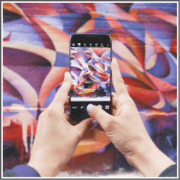

Previously I have mentioned about clicking photos using your camera and selling them.
This way of making money is also related to photography but it’s it has a twist in it.
In this way, instead of taking photographs using your camera you need to take photographs using your smartphone and upload it using the following apps.
In this way, you need to install the following apps on your smartphone.
You’ll be given photographic assignments such as taking the pictures of nature around you, fruits you eat, things inside your fridge and so on.
All you need to do is complete the given assignments by taking pictures using your smartphones and upload them back.
After completing the assignments if your photographs are selected, you'll be paid handsomely.
But you need to make sure that the pictures you take look professional in the best possible way.
Here’s the list of the apps you should install to sell your smartphone pictures: